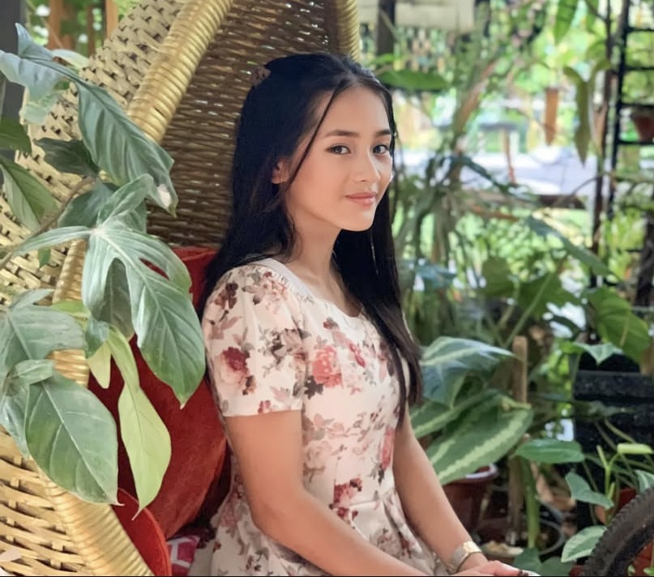
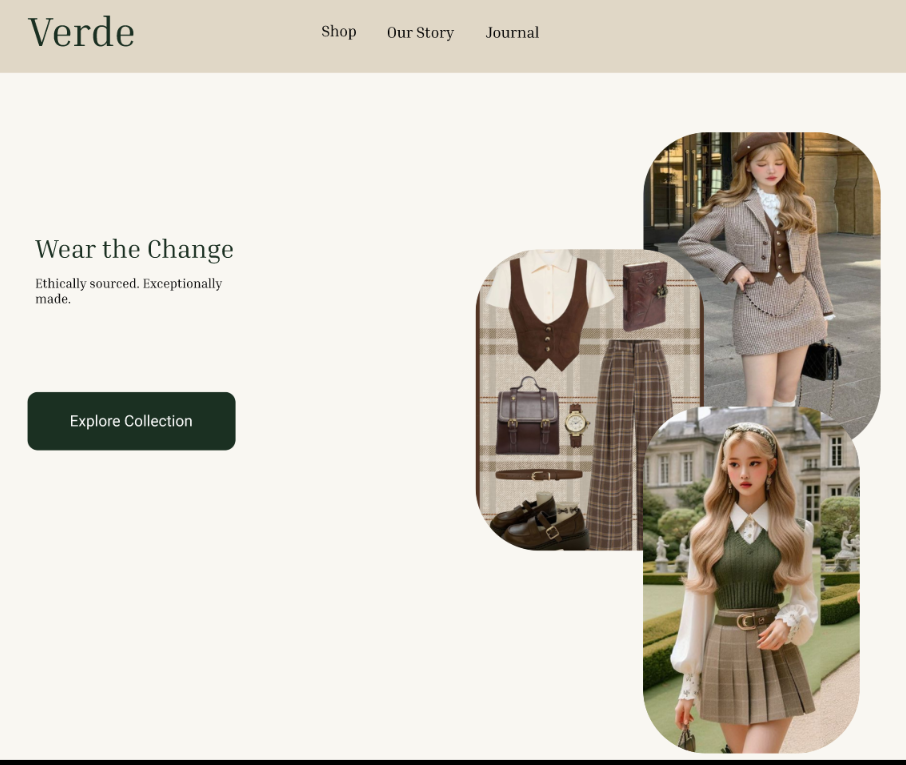
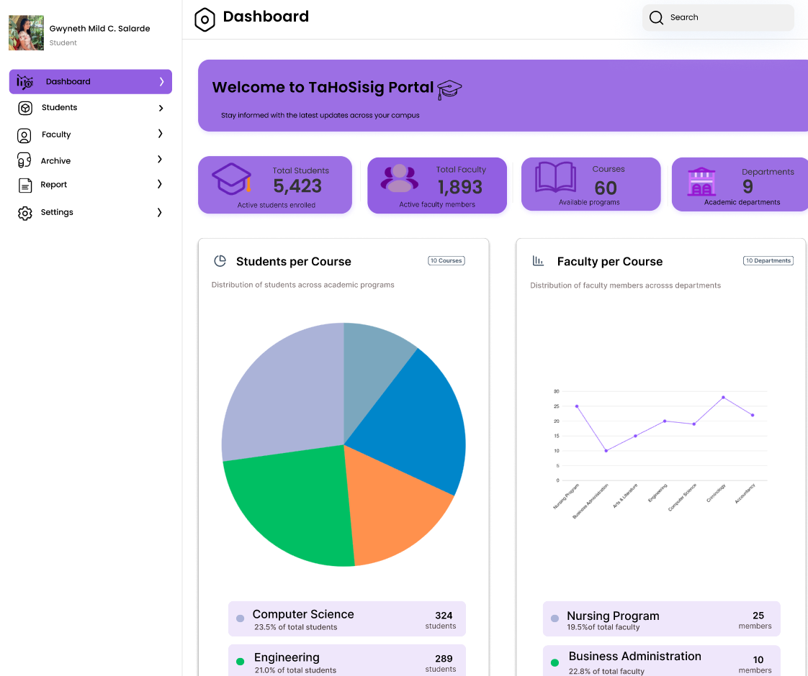
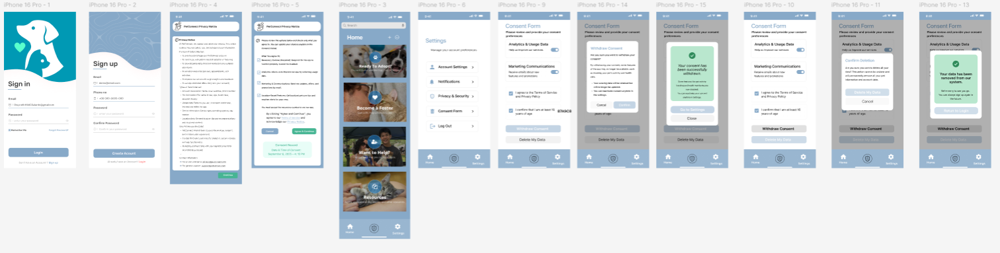

I am currently a third-year IT student, passionate about technology and continuous learning. I also enjoy designing in Figma, where I can express my creativity and improve my skills in UI/UX design. In my daily life, I enjoy doing activities that make me happy and relaxed. I love watching movies during my free time because it helps me unwind and enjoy different stories. I also listen to music every day since it improves my mood and keeps me motivated. Aside from that, I like staying active. I play badminton with friends whenever I have time, and I enjoy biking around our area. These simple activities are part of my daily routine and help me maintain a healthy and balanced lifestyle.
This is a clean and modern fashion website design I created in Figma. I used soft green and neutral tones to create a calm, natural, and elegant feel. The layout is simple and well-organized, making it easy for users to explore categories and products. Rounded images, balanced spacing, and clear typography help keep the design stylish while maintaining a smooth and user-friendly experience.

TaHoSisig Portal is a web-based academic management dashboard designed to provide an organized and data-driven overview of a school’s key information. It displays real-time statistics on students, faculty, courses, and departments through interactive charts and summary cards. The system aims to improve accessibility of information, support decision-making, and enhance overall campus monitoring through a user-friendly and visually intuitive interface

PetConnect is a mobile application designed to connect pet lovers with adoption and fostering opportunities. The app allows users to sign up, manage their accounts, and explore pets available for adoption. It also includes privacy settings, consent management, and data control features to ensure user transparency and security. The goal of the project is to create a user-friendly and secure platform that promotes responsible pet adoption while protecting user data and preferences.
